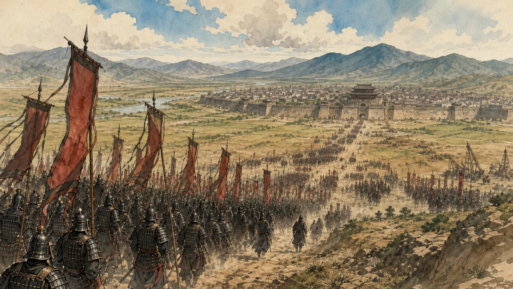

Who's your favorite?
你最喜欢谁？
Tap a face · 点一张脸
Two thousand years of Chinese strategy, one story at a time. Watch the video, keep the free page.
Wei's best army had Zhao's capital surrounded. Qi never went to the city — it marched on Wei's own capital instead, and the siege lifted itself.

你最喜欢谁？
Tap a face · 点一张脸

I'm Yoko. I make short videos about the thirty-six stratagems every Chinese kid grows up with.我是阳子，讲中国人从小就懂的三十六计。
For each one I tell the old story first, then show where the same move shows up today — in an office, in a marriage, in a family argument.每一计先讲古代那一仗，再说今天它出现在哪儿——办公室、夫妻、家里的争执。
If one of them lights something up for you, take the free page and try it this week.哪一计让你想通了一件事，就拿走那一页，这周试一试。